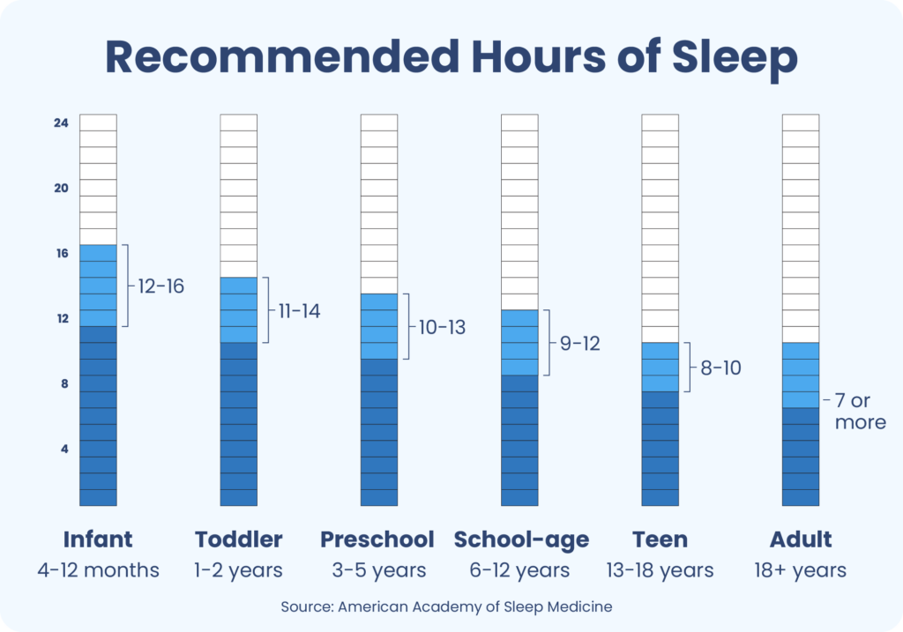

Healthfit Blog
How much sleep do you actually need?
Sleep quality counts as much as hours logged.
Published Nov 8, 2023

On average, how many hours do you sleep each night? For most healthy adults, guidelines suggest at least seven hours of slumber.
But these are general recommendations and not strict rules. "Some people need less than seven hours, while others might need more," says Eric Zhou with the Division of Sleep Medicine at Harvard Medical School.
Do you need more or less sleep time?
We get it: you know people who swear they only need five hours of sleep per night, yet you feel foggy unless you log in eight to nine hours. The major reason for individual differences is that we often look at sleep the wrong way.
"Instead of focusing exclusively on the number of hours we sleep per night, we should also consider our sleep quality," says Zhou.
Sleep quality means how well you sleep during the night. Did you sleep straight through? Or did you have periods where you woke up? If so, did it take you a long time to fall asleep? How did you feel when you woke up?
"If you awaken refreshed and feel like you have the energy to get through your day, then I would worry less about the exact number of hours you're sleeping," says Zhou.
How does sleep quality affect your health?
Sleep quality is vital for our overall health. Research has shown that people with poor sleep quality are at a higher risk for diabetes, heart disease, stroke, and mental health issues like anxiety and depression.
And that's not all. "Poor sleep also can increase daytime fatigue and make it more difficult to enjoy life," says Zhou.
Yet it's normal for people's sleep patterns to change over time. "Many people are not going to sleep in their 50s and 60s exactly like they did in their 20s," says Zhou.
Many of these changes are age-related. For instance, your circadian rhythm — which regulates many bodily functions, including our sleep-wake cycle — can naturally get disrupted over time. This means people spend less time each night in restorative slow-wave sleep.
Production of melatonin, the sleep hormone, also gradually declines with age. "As a result of these changes, when we get older we may start to wake up earlier than we did when we were younger, or wake up more frequently during the night," says Zhou.
How can you track sleep quality?
How can you better understand the factors likely contributing to your sleep quality? One way is to keep a sleep diary where you track and record your sleep.
Every day, record the time you went to bed, how long it took you to fall asleep, whether you had any nighttime awakenings (and if so, how long you were awake), and at what time you woke up. Also, keep track of how you feel upon awakening and at the end of the day.
"After a week or two, review the information to see if you can identify certain patterns that may be affecting your sleep quality, then make adjustments," says Zhou.
For example, if you have trouble falling asleep, go to bed half an hour later than usual but maintain the same wake-up time. "It is common for people struggling with their sleep to try to get more sleep by staying in bed longer, but this disrupts their sleep patterns and diminishes their sleep quality," says Zhou.
Three key strategies to support the quality of your sleep
Other strategies that can help support good sleep quality include:
When it comes to sleep quality, consistency is vital. "People with good sleep quality often have a predictable sleep window where their sleep occurs," says Zhou. "Good sleepers are likely to sleep around the same number of hours and stay asleep through the night."
The bottom line on getting restful sleep
It's unrealistic to expect perfect sleep every night. "If you have trouble sleeping one or two nights during the week, that can be related to the natural ebbs and flows of life," says Zhou. "You may have eaten a big meal that day, drank too much alcohol while watching football, or had a stressful argument with someone. When tracking sleep quality, look at your overall sleep health week-to-week, not how you slept this Tuesday compared to last Tuesday."
If you are doing all the right things for your sleep but still do not feel rested upon waking, talk to your doctor. This can help you rule out a sleep disorder like sleep apnea, or another health issue that can interfere with sleep such as acid reflux or high blood pressure. Other factors that can affect the quality of your sleep include taking multiple medicines, depression, anxiety, loneliness, and environmental changes like temperature, noise, and light exposure.

Comments